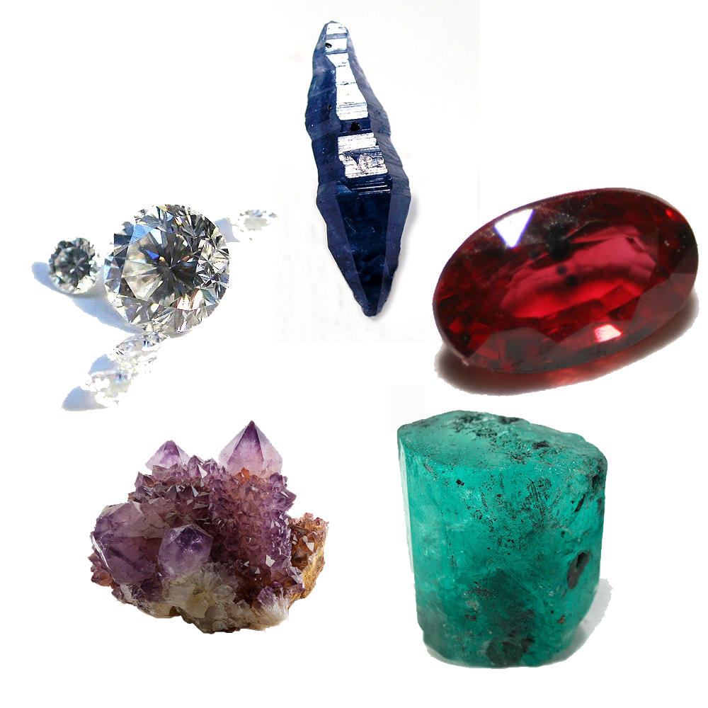

A gemstone (also called a gem, fine gem, jewel, precious stone, or semi-precious stone) is a piece of mineral crystal which, in cut and polished form, is used to make jewelry or other adornments. However, certain rocks (such as lapis lazuli and opal) and occasionally organic materials that are not minerals (such as amber, jet, and pearl) are also used for jewelry and are therefore often considered to be gemstones as well. Most gemstones are hard, but some soft minerals are used in jewelry because of their luster or other physical properties that have aesthetic value. Rarity is another characteristic that lends value to a gemstone. 
Apart from jewelry, from earliest antiquity engraved gems and hardstone carvings, such as cups, were major luxury art forms. A gem maker is called a lapidary or gemcutter; a diamond cutter is called a diamantaire.